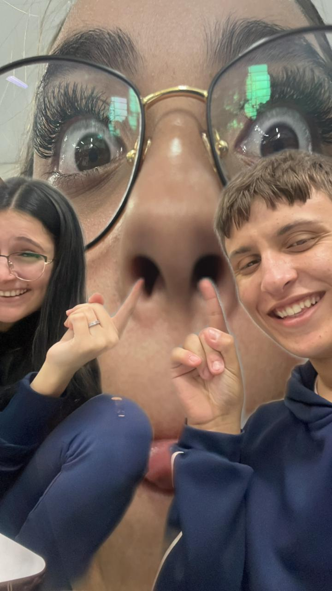

Passeio da Caverna
Eu, Karol e Emele todos sujos de barro no passeio da Aline em 05/06/2023.

Dia a Dia na Sala
Quando eu, Karol e Stezinha éramos todos meios malucos das ideias. Em Setembro de 2023...

Última foto com a Stezinha üò≠
Última foto que eu e Stezinha tiramos antes dela mudar de escola. Em julho de 2024...
Sara comendo cachorro quente 07:30 da manhã
Sara tomando café e comendo apenas um cachorro quente na primeira aula!... Em Julho de 2024.

Sendo desocupados
Eu e a stezinha sendo desocupados e fingindo que não tinhamos nada para copiar! Em maio de 2024.
A melancia que nunca brotouüçâ
A melancia que eu e a Sara plantamos no trabalho de quimica em Agosto de 2024. E que até hoje nunca deu sinal de vida!